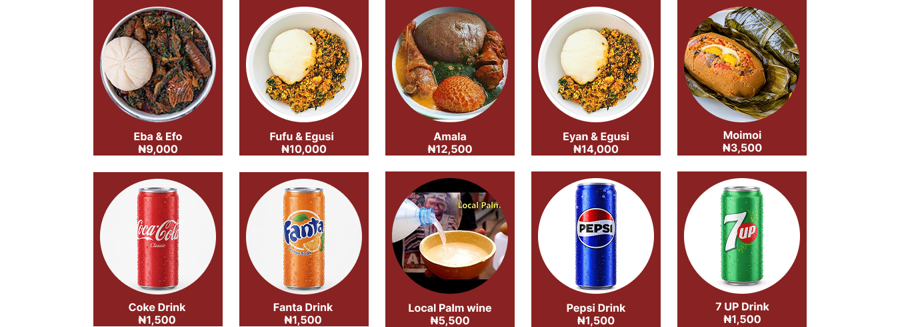

ABIKE KITCHENS TRADITION
Each meal is prepared fresh daily with the finest local ingredients to ensure you get that home-style Nigerian taste.

Freshly prepared with love.
We serve delicious Nigerian dishes inspired by traditional Yoruba cooking, prepared with care, quality ingredients and a taste of home.